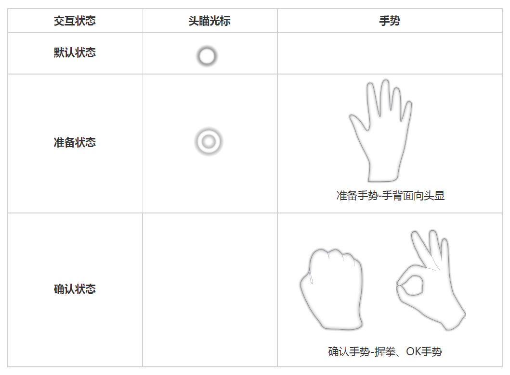

手势交互操作说明
我们提供了几种常用的标准手势交互方式，如果您需要在项目中使用标准手势，建议您详细阅读下面的标准使用方法。
交互状态
用户可以通过头部瞄准光标对准交互物体，同时用户手势切换，来实现在MR世界中的交互动作。在这个过程中有以下交互状态： 默认状态、 准备状态 以及 确认状态 。
Note
通常情况下，为避免用户视线被干扰，虚拟手部模型（Virtural Hand Model）建议设置为关闭状态， 头瞄光标状态的切换可以提示用户的手势输入已经被识别，且与虚拟世界有交互关系。
交互方式
对于在MR世界中的UI界面，交互方式主要有两种：单击、拖动。
单击 ：用户通过头瞄光标对准UI组件，如Toggle、Button等，同时进行切换手势（从准备手势至确认手势），即可与UI组件进行交互。

拖动 ：用户通过头瞄光标对准UI组件，如Slider，同时手势从准备手势切换至确认手势，保持确认手势，并通过确认手势的移动，控制UI组件数值的变化。

对于在MR世界中具有三维坐标的物体，交互方式有移动等。
移动 ：用户通过头瞄光标对准及切换手势选中物体后，头显与物体的距离不变，然后通过移动头部来控制物体移动，松开确认手势后退出移动操纵。

手势绘画 ：用户可以通过确认手势-OK手势，在虚拟世界中进行画画绘制。并可以通过再次确认手势-握拳手势将已有的绘画内容清除。